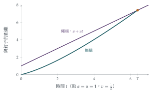

STEP II 2018，第 10 題
繼續之前，請先閱讀題目（原題為英文）。題目載於 STEP Support Programme 的題目資料庫： step.maths.org/questions/18-s2-q10
引子
一隻螞蟻沿着一條長一公里的橡皮繩出發，每秒走一厘米。每過一秒，繩子都會均勻地再拉長一公里。繩的遠端以每秒一千米的速度飛馳而去，比螞蟻快十萬倍。螞蟻最終能走到繩的盡頭嗎？
令人驚訝的是，答案是能。繩子拉伸時會帶着螞蟻一起前進；雖然螞蟻每次走過的路程佔繩長的比例愈來愈小，但這些比例加起來就像調和級數（harmonic series），而調和級數是發散（diverge）的（第 2.3 節）。螞蟻終會到達，只是所需的時間遠遠超過宇宙的年齡。本題精確地解出這個問題的連續版本，並發現所需時間隨兩個速率之比呈指數增長。
動筆之前
繩子是均勻拉伸的：每一小段都按相同的倍數伸長。在時間 \(t\)，繩長為 \(a + ut\)。若距離釘子 \(x\) 的一點位於全長的 \(\frac{x}{a + ut}\) 處，這一點移動得有多快？
繩上每一點所佔全長的比例 \(f\) 保持不變，所以它與釘子的距離是 \(f(a + ut)\)，速率是 \(fu = \frac{ux}{a + ut}\)。靠近釘子的點幾乎不動；遠端則以 \(u\) 的速率移動。
逐步解題
階段 1 螞蟻的方程
螞蟻相對於繩子的速率是 \(v\)，還要加上牠腳下那段繩子的速率： \[\frac{\mathrm{d}x}{\mathrm{d}t} = v + \frac{ux}{a + ut}.\]
用商法則（quotient rule）對 \(\frac{x}{a + ut}\) 求導，並代入 \(\dot x\) 的方程。
\[\frac{\mathrm{d}}{\mathrm{d}t}\Bigl(\frac{x}{a + ut}\Bigr) = \frac{\dot x}{a + ut} - \frac{ux}{(a + ut)^2} = \frac{1}{a + ut}\Bigl(v + \frac{ux}{a + ut}\Bigr) - \frac{ux}{(a + ut)^2} = \frac{v}{a + ut}. \qed\] 螞蟻已走過的繩長比例以 \(\frac{v}{a + ut}\) 的速率增加：即牠自身的速率除以當時的繩長。拉伸的影響完全消失了，因為拉伸不會改變任何一點所佔的比例。
階段 2 到達盡頭
由 \(0\) 積分至 \(t\)。比例何時達到 \(1\)？
螞蟻從釘子出發，所以 \[\frac{x}{a + ut} = \int_0^t\frac{v\,\mathrm{d}s}{a + us} = \frac vu\ln\frac{a + ut}{a}.\] 當比例等於 \(1\) 時，螞蟻到達盡頭：\(\ln\frac{a + uT}{a} = \frac uv = k\)，所以 \(a + uT = ae^k\)，即 \[uT = a(e^k - 1). \qed\] 對數可以無限增大，所以無論繩子拉得多快，螞蟻總會到達。
階段 3 回程
往回走時，螞蟻相對於繩子的速度是 \(-v\)。現在牠所佔比例的變化率是多少？牠在時間 \(T\) 由比例 \(1\) 出發。
以 \(-v\) 重複同樣的計算，得 \(\frac{\mathrm{d}}{\mathrm{d}t}\bigl(\frac{x}{a + ut}\bigr) = -\frac{v}{a + ut}\)，所以 \[\frac{x}{a + ut} = 1 - \frac vu\ln\frac{a + ut}{a + uT}.\] 當 \(a + ut = (a + uT)e^k\) 時，比例降至 \(0\)。由於 \(a + uT = ae^k\)，回程所需時間為 \[t - T = \frac{(a + uT)(e^k - 1)}{u} = \frac{ae^k\cdot uT/a}{u} = Te^k. \qed\] 回程所需的時間是去程的 \(e^k\) 倍：螞蟻掉頭的時候，繩子已是開始時的 \(e^k\) 倍長。

回顧
選對變量。已走過的繩長比例是最自然的量：拉伸不會改變它。
喬裝了的積分因子（integrating factor）。乘以 \(\frac{1}{a + ut}\) 之後，一條線性微分方程（linear differential equation）就變成了一個恰好的導數。
發散勝過速度。比例像對數一樣增長，而對數是無界的，所以螞蟻總會到達。
背後的數學
調和級數的版本
這個謎題通常是以離散的拉伸來敍述的。一條繩長 \(1\) 公里；螞蟻在第一秒走 \(1\) 厘米；然後繩子拉長 \(1\) 公里；然後螞蟻再走一厘米，如此類推。在第 \(n\) 秒，螞蟻在長 \(n\) 公里的繩上走了 \(1\) 厘米：所佔比例為 \(\frac{1}{100\,000\,n}\)。拉伸不會改變牠所佔的比例，所以 \(N\) 秒之後，牠已走過繩子的 \[\frac{1}{100\,000}\Bigl(1 + \frac12 + \frac13 + \cdots + \frac1N\Bigr) \approx \frac{\ln N + 0.577}{100\,000}\] 。當 \(H_N \approx 100\,000\) 時牠便到達，那大約是 \(e^{100\,000}\) 秒之後，這個數有超過 \(43\,000\) 位數字。（作為比較，宇宙的年齡約為 \(4 \times 10^{17}\) 秒。）我們的連續版答案與此吻合：\(k = \frac uv = 100\,000\)，而 \(T \approx \frac aue^k\)。
膨脹宇宙中的光
繩上的螞蟻，正是光穿越膨脹宇宙的一個模型。遙遠的星系被空間本身的膨脹帶着遠離我們，而它們發出的光則以速率 \(c\) 在膨脹的空間之中向我們傳播，就像螞蟻沿着拉伸中的繩子行走一樣。遙遠星系的光最終能否到達我們這裏，取決於膨脹率如何隨時間變化。在一個以穩定速率膨脹的宇宙中，就像那條繩子一樣，光最終總會到達。而在一個加速膨脹的宇宙中（我們的宇宙看來正是如此），有些星系的光永遠不會到達我們這裏：這就是宇宙事件視界（cosmic event horizon）。對螞蟻來說，相應的情況是一條按指數拉伸的繩子，繩端的速率與繩長成正比地增長（可在練習中試試）。
這個謎題似乎是法國數學家 Denys Wilquin 在 1972 年發明的，當時說的是橡皮筋上的一條蟲；其後馬丁·加德納（Martin Gardner）在他的 Scientific American 專欄和著作 Time Travel and Other Mathematical Bewilderments 中介紹，令它廣為人知。它是最著名的例子之一：結果違反直覺，卻又容易證明；它也是人們說明調和級數發散時最愛用的例子。
思維技巧
當問題中某個部分改變了一切（這裏是拉伸），就去找一個它不會改變的量。
拉伸會改變每一段距離，卻不改變任何比例。改用比例來處理，拉伸就從問題中消失了。在大學裏，這個想法會以宇宙學和流體力學中的共動坐標（comoving coordinates）的形式出現，更一般地說，就是尋找在某個變換下的不變量（invariant）。
延伸練習
中途。螞蟻何時走到繩子的一半？那是在時間 \(\frac T2\) 之前還是之後？
指數拉伸。假設繩長改為 \(ae^{\lambda t}\)。證明螞蟻僅當 \(v > \lambda a\) 時才能到達盡頭。（這就是宇宙事件視界。）
加速的繩子。若繩長為 \(a + \frac12bt^2\)，螞蟻是否總能到達？
離散的謎題。在離散版本中，螞蟻需要多少秒才能走過繩子的 \(1\%\)？請使用 \(H_N \approx \ln N + 0.577\)。
延伸閱讀
Martin Gardner, Time Travel and Other Mathematical Bewilderments（W. H. Freeman）。書中收錄了橡皮繩上的螞蟻。
Julian Havil, Gamma: Exploring Euler’s Constant（Princeton University Press）。調和級數，以及這隻螞蟻。
Barbara Ryden, Introduction to Cosmology（Cambridge University Press）。膨脹的空間、視界與共動坐標，屬大學本科程度。